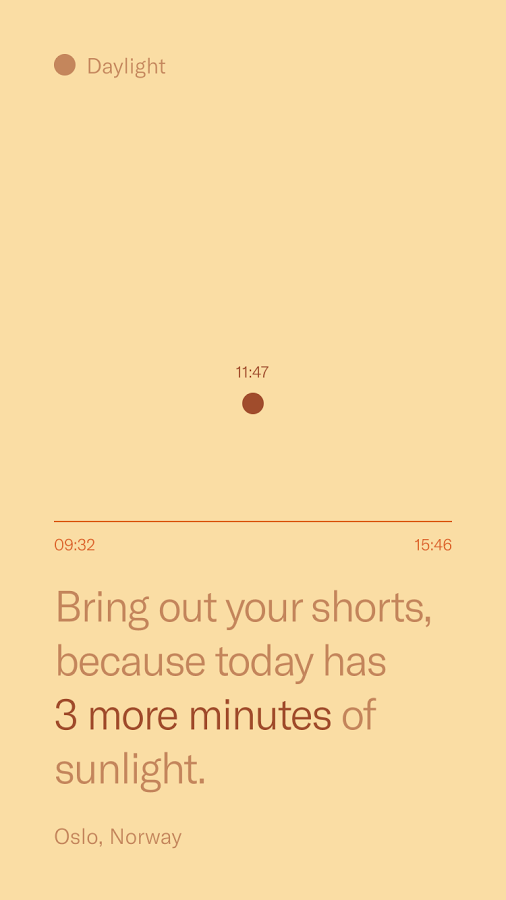
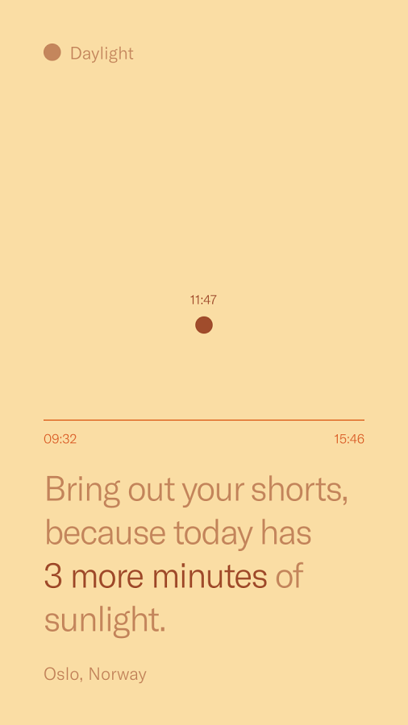
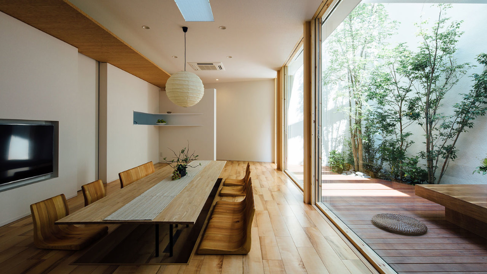
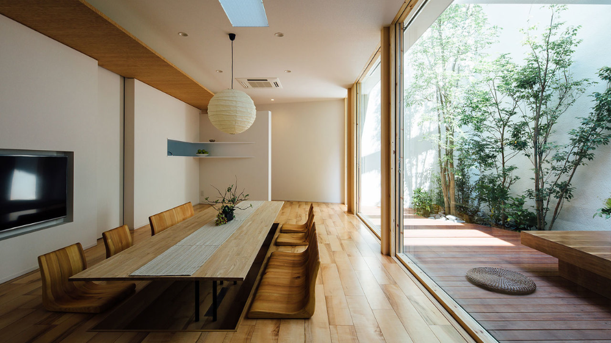
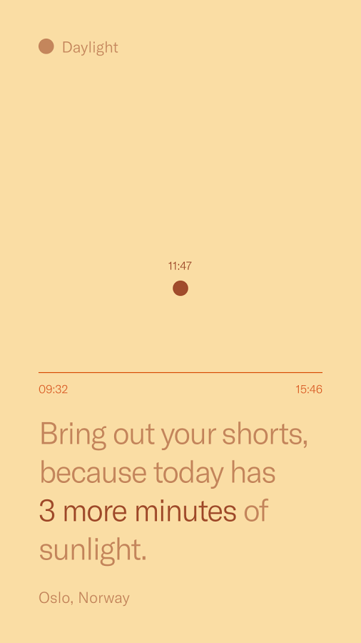
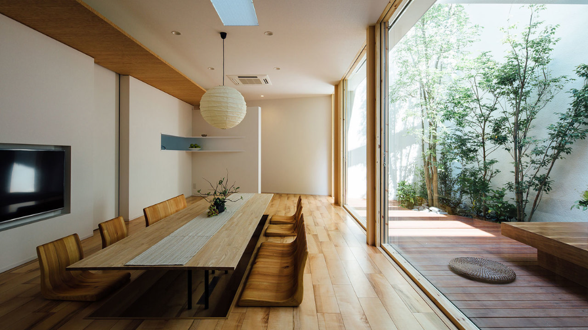
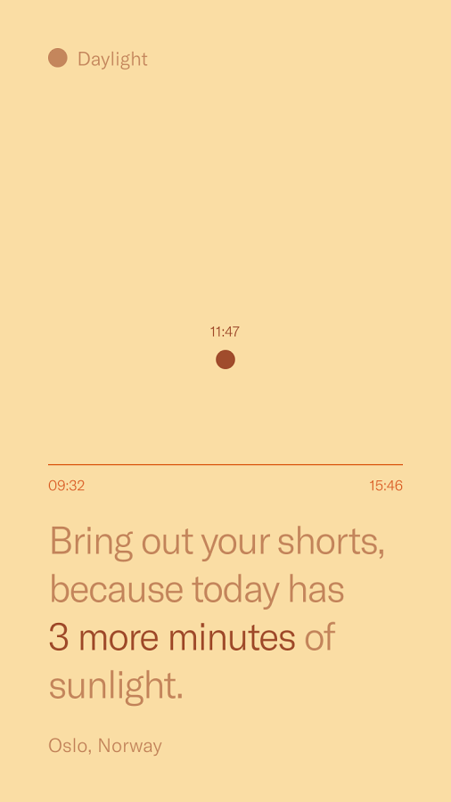
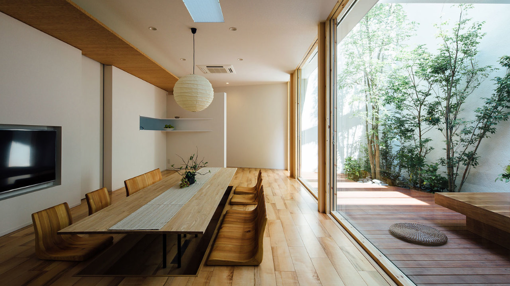

_ Twitter.png)


 


 

_Artwork Info About the Artist Artist Docs 2016Inkjet print on archival paperFrom the series “Cité de Marie”Signed, titled, dated, and editioned, by artist, in pencil, au versoUnframed....jpg)


 _ Twitter.jpg)


 _ Twitter.png)


 you can buy direct from Japan.jpg)


 _ The Criterion Collection.png)


… '.jpg)


 _ Twitter.png)


_Nike Pd Home.jpg)


 _ Twitter.png)


 


